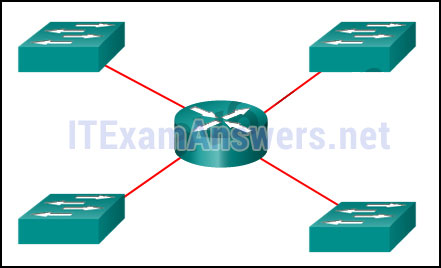
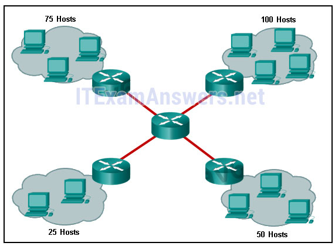
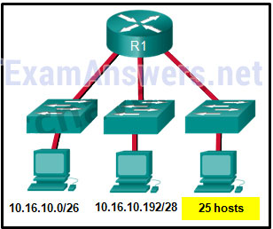
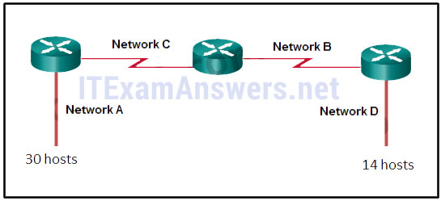
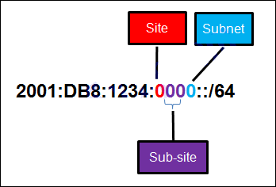
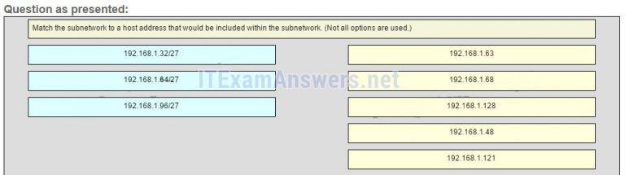
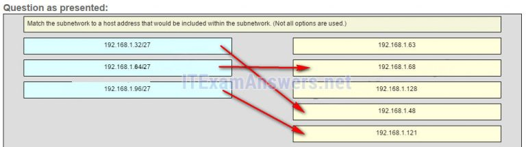
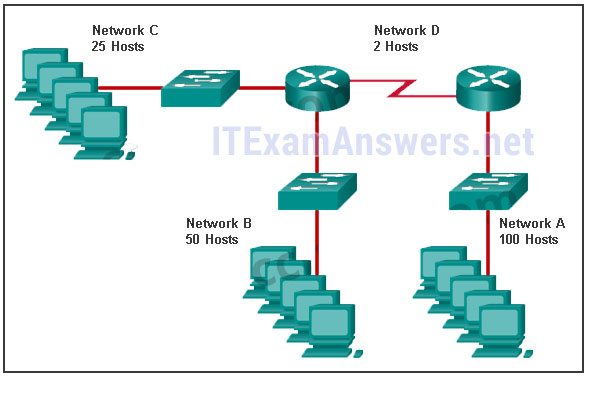
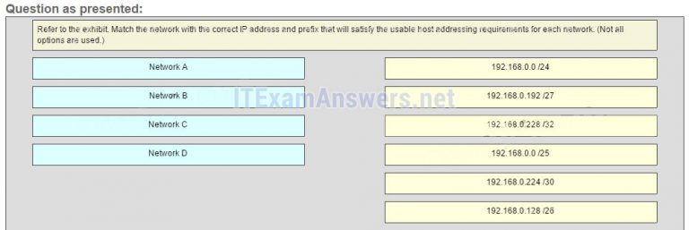
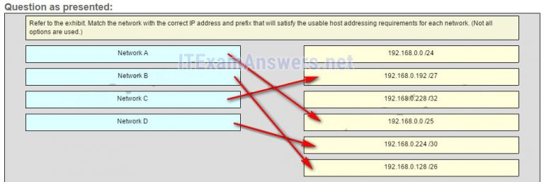

1.¿Cuál es el resultado de conectar dos o más interruptores juntos?
- El tamaño del dominio de transmisión aumenta. *
- El número de dominios de difusión aumenta.
- El número de dominios de colisión se reduce.
- El tamaño del dominio de colisión se incrementa.
- @javi__super
Explicación:
cuando dos o más conmutadores están conectados entre sí, el tamaño del dominio de transmisión aumenta y también el número de dominios de colisión. El número de dominios de difusión aumenta solo cuando se agregan enrutadores.
2.Consulte la presentación. ¿Cuántos dominios de difusión hay?
-

- 1
- 2
- 4 *
- @javi__super
Explicar:
se utiliza un enrutador para enrutar el tráfico entre diferentes redes. No se permite que el tráfico de transmisión cruce el enrutador y, por lo tanto, estará contenido dentro de las subredes respectivas donde se originó.
3.¿Cuáles son dos razones por las que un administrador de red podría querer crear subredes? (Escoge dos.)
- mejora el rendimiento de la red *
- simplifica el diseño de la red
- Políticas de seguridad más fáciles de implementar *
- Reducción en el número de enrutadores necesarios.
- @javi__super
Explique:
dos razones para crear subredes incluyen la reducción del tráfico de la red en general y la mejora del rendimiento de la red. Las subredes también permiten que un administrador implemente políticas de seguridad basadas en subredes. El número de enrutadores o conmutadores no se ve afectado. Las subredes no simplifican el diseño de la red.
4.Consulte la presentación. Una empresa utiliza el bloque de direcciones de 128.107.0.0/16 para su red. ¿Qué máscara de subred proporcionaría el número máximo de subredes de igual tamaño al mismo tiempo que proporciona suficientes direcciones de host para cada subred en la exhibición?
-

- 255.255.255.128 *
- 255.255.255.0
- 255.255.255.192
- 255.255.255.224
- @javi__super
Explicación:
la subred más grande en la topología tiene 100 hosts, por lo que la máscara de subred debe tener al menos 7 bits de host (27-2 = 126). 255.255.255.0 tiene 8 bits de host, pero esto no cumple con el requisito de proporcionar el número máximo de subredes.
5.Consulte la presentación. El administrador de red ha asignado a la LAN de LBMISS un rango de direcciones de 192.168.10.0. Este rango de direcciones se ha dividido en subredes usando un prefijo / 29. Para acomodar un nuevo edificio, el técnico ha decidido utilizar la quinta subred para configurar la nueva red (la subred cero es la primera subred). Según las políticas de la empresa, a la interfaz del enrutador siempre se le asigna la primera dirección de host utilizable y al servidor de grupo de trabajo se le asigna la última dirección de host utilizable. ¿Qué configuración se debe ingresar en las propiedades del servidor de grupo de trabajo para permitir la conectividad a Internet?
- Dirección IP: 192.168.10.38 máscara de subred: 255.255.255.248, puerta de enlace predeterminada: 192.168.10.33 *
- Dirección IP: 192.168.10.65 máscara de subred: 255.255.255.240, puerta de enlace predeterminada: 192.168.10.76
- Dirección IP: 192.168.10.38 máscara de subred: 255.255.255.240, puerta de enlace predeterminada: 192.168.10.33
- Dirección IP: 192.168.10.254 máscara de subred: 255.255.255.0, puerta de enlace predeterminada: 192.168.10.1
- @javi__super
Explicación:
el
uso de un prefijo / 29 para la subred 192.168.10.0 produce subredes que aumentan en 8:
192.168.10.0 (1)
192.168.10.8 (2)
192.168.10.16 (3)
192.168.10.24 (4)
192.168.10.32 (5)
6.Si un dispositivo de red tiene una máscara de / 28, ¿cuántas direcciones IP están disponibles para los hosts en esta red?
- 14 *
- 256
- 254
- 62
- @javi__super
Explique:
la
máscara A / 28 es lo mismo que 255.255.255.240. Esto deja 4 bits de host. Con 4 bits de host, son posibles 16 direcciones IP, pero una dirección representa el número de subred y una dirección representa la dirección de transmisión. Luego se pueden usar 14 direcciones para asignar a dispositivos de red.
7.¿Qué máscara de subred se usaría si hay 5 bits de host disponibles?
- 255.255.255.224 *
- 255.255.255.128
- 255.255.255.0
- 255.255.255.240
- @javi__super
Explique:
La máscara de subred de 255.255.255.0 tiene 8 bits de host. La máscara de 255.255.255.128 da como resultado 7 bits de host. La máscara de 255.255.255.224 tiene 5 bits de host. Finalmente, 255.255.255.240 representa 4 bits de host.
8.¿Cuántas direcciones de host están disponibles en la red 172.16.128.0 con una máscara de subred de 255.255.252.0?
- 1022 *
- 510
- 512
- 1024
- @javi__super
Explicar:
una máscara de 255.255.252.0 es igual a un prefijo de / 22. El prefijo A / 22 proporciona 22 bits para la porción de red y deja 10 bits para la porción de host. Los 10 bits en la parte del host proporcionarán 1022 direcciones IP utilizables (2 ^ 10 - 2 = 1022).
9.¿Cuántos bits deben tomarse prestados de la parte del host de una dirección para acomodar un enrutador con cinco redes conectadas?
- Tres *
- dos
- cuatros
- dos
- @javi__super
Explique:
Cada red que está conectada directamente a una interfaz en un enrutador requiere su propia subred. La fórmula 2n, donde n es el número de bits prestados, se utiliza para calcular el número disponible de subredes cuando se toma prestado un número específico de bits.
10.Un administrador de red desea tener la misma máscara de red para todas las redes en un sitio pequeño en particular. El sitio tiene las siguientes redes y número de dispositivos: Teléfonos IP - 22 direcciones PC - 20 direcciones necesarias Impresoras - 2 direcciones necesarias Escáneres - 2 direcciones necesarias El administrador de red ha considerado que 192.168.10.0/24 es la red utilizada en este sitio. ¿Qué máscara de subred única haría el uso más eficiente de las direcciones disponibles para usar en las cuatro subredes?
- 255.255.255.224 *
- 255.255.255.0
- 255.255.255.192
- 255.255.255.240
- @javi__super
Explicar:
si se va a usar la misma máscara, entonces se debe examinar la red con la mayoría de los hosts para el número de hosts, que en este caso son 22 hosts. Por lo tanto, se necesitan 5 bits de host. La máscara de subred / 27 o 255.255.255.224 sería apropiada para usar en estas redes.
11.Una compañía tiene una dirección de red de 192.168.1.64 con una máscara de subred de 255.255.255.192. La compañía desea crear dos subredes que contendrían 10 hosts y 18 hosts respectivamente. ¿Qué dos redes lograrían eso? (Escoge dos.)
- 192.168.1.64/27 *
- 192.168.1.16/28
- 192.168.1.96/28 *
- 192.168.1.128/27
- @javi__super
Explicación:
la
subred 192.168.1.64 / 27 tiene 5 bits asignados para direcciones de host y, por lo tanto, podrá admitir 32 direcciones, pero solo 30 direcciones IP de host válidas. La subred 192.168.1.96/28 tiene 4 bits para direcciones de host y podrá admitir 16 direcciones, pero solo 14 direcciones IP de host válidas
12.Un administrador de red está subdividiendo de forma variable una red. La subred más pequeña tiene una máscara de 255.255.255.248. ¿Cuántas direcciones de host utilizables proporcionará esta subred?
- 6 *
- 4
- 8
- 12
- @javi__super
Explicar:
la máscara 255.255.255.248 es equivalente al prefijo / 29. Esto deja 3 bits para los hosts, proporcionando un total de 6 direcciones IP utilizables (23 = 8 - 2 = 6).
13.Consulte la presentación. Dada la dirección de red de 192.168.5.0 y una máscara de subred de 255.255.255.224, ¿cuántas direcciones de host totales no se utilizan en las subredes asignadas?
- 72 *
- 56
- 64
- 68
- @javi__super

Explique:
La dirección IP de red 192.168.5.0 con una máscara de subred de 255.255.255.224 proporciona 30 direcciones IP utilizables para cada subred. La subred A necesita 30 direcciones de host. No hay direcciones desperdiciadas. La subred B usa 2 de las 30 direcciones IP disponibles, porque es un enlace serial. En consecuencia, se desperdician 28 direcciones. Asimismo, la subred C desperdicia 28 direcciones. La subred D necesita 14 direcciones, por lo que desperdicia 16 direcciones. El total de direcciones desperdiciadas son 0 + 28 + 28 + 16 = 72 direcciones.
14.Consulte la presentación. Teniendo en cuenta las direcciones ya utilizadas y teniendo que permanecer dentro del rango de red 10.16.10.0/24, ¿qué dirección de subred podría asignarse a la red que contiene 25 hosts?
-

- 10.16.10.64/27 *
- 10.16.10.160/26
- 10.16.10.128/28
- 10.16.10.224/26
- @javi__super
15.Consulte la presentación. Dada la dirección de red de 192.168.5.0 y una máscara de subred de 255.255.255.224 para todas las subredes, ¿cuántas direcciones de host totales no se utilizan en las subredes asignadas?
-

- 72 *
- 64
- 60
- 56
- @javi__super
16.Un administrador de red necesita monitorear el tráfico de red hacia y desde los servidores en un centro de datos. ¿Qué características de un esquema de direccionamiento IP deberían aplicarse a estos dispositivos?
- Direcciones IP estáticas predecibles para una identificación más fácil *
- Direcciones estáticas aleatorias para mejorar la seguridad
- Direcciones dinámicas para reducir la probabilidad de direcciones duplicadas
- Direcciones de diferentes subredes para redundancia
- @javi__super
Explique:
al monitorear servidores, un administrador de red debe poder identificarlos rápidamente. El uso de un esquema de direccionamiento estático predecible para estos dispositivos hace que sean más fáciles de identificar. La seguridad del servidor, la redundancia y la duplicación de direcciones no son características de un esquema de direccionamiento IP.
17.¿Cuáles dos razones generalmente hacen que el DHCP sea el método preferido para asignar direcciones IP a hosts en redes grandes? (Escoge dos.)
- Elimina la mayoría de los errores de configuración de direcciones. *
- Asegura que las direcciones solo se apliquen a dispositivos que requieren una dirección permanente.
- Garantiza que cada dispositivo que necesite una dirección obtendrá uno.
- Reduce la carga en el personal de soporte de red. *
- @javi__super
Explique:
DHCP es generalmente el método preferido para asignar direcciones IP a hosts en redes grandes porque reduce la carga en el personal de soporte de red y prácticamente elimina los errores de entrada. Sin embargo, el propio DHCP no discrimina entre dispositivos autorizados y no autorizados y asignará parámetros de configuración a todos los dispositivos solicitantes. Los servidores DHCP generalmente están configurados para asignar direcciones desde un rango de subred, por lo que no hay garantía de que todos los dispositivos que necesiten una dirección obtendrán una.
18.Un servidor DHCP se usa para asignar direcciones IP dinámicamente a los hosts en una red. El conjunto de direcciones está configurado con 192.168.10.0/24. Hay 3 impresoras en esta red que necesitan usar direcciones IP estáticas reservadas del grupo. ¿Cuántas direcciones IP en el grupo quedan para ser asignadas a otros hosts?
- 251 *
- 254
- 251
- 256
- @javi__super
Explicar:
si el bloque de direcciones asignadas al grupo es 192.168.10.0/24, hay 254 direcciones IP que se asignarán a los hosts en la red. Como hay 3 impresoras que necesitan tener sus direcciones asignadas de forma estática, entonces quedan 251 direcciones IP para asignar.
19.Consulte la presentación. Una empresa está implementando un esquema de direccionamiento IPv6 para su red. El documento de diseño de la compañía indica que la porción de subred de las direcciones IPv6 se usa para el nuevo diseño jerárquico de la red, con la subsección del sitio para representar múltiples sitios geográficos de la compañía, la sección del subsitio para representar varios campus en cada sitio y la Sección de subred para indicar cada segmento de red separado por enrutadores. Con un esquema de este tipo, ¿cuál es el número máximo de subredes alcanzadas por subsitio?
-

- dieciséis *
- 0
- 4
- 256
- @javi__super
Explicación:
como
solo se utiliza un carácter hexadecimal para representar la subred, ese carácter puede representar 16 valores diferentes de 0 a F.
20.¿Cuál es el prefijo para la dirección de host 2001: DB8: BC15: A: 12AB :: 1/64?
- 2001: DB8: BC15: A *
- 2001: DB8: BC15
- 2001: DB8: BC15: A: 1
- 2001: DB8: BC15: A: 12
- @javi__super
Explicación:
la parte de la red, o el prefijo, de una dirección IPv6 se identifica a través de la longitud del prefijo. La longitud del prefijo A / 64 indica que los primeros 64 bits de la dirección IPv6 son la parte de la red. Por lo tanto, el prefijo es 2001: DB8: BC15: A.
21.Considere el siguiente rango de direcciones:
2001: 0DB8: BC15: 00A0: 0000 ::
2001: 0DB8: BC15: 00A1: 0000 ::
2001: 0DB8: BC15: 00A2: 0000 ::
...
2001: 0DB8: BC15: 00AF: 0000 ::
- La longitud del prefijo para el rango de direcciones es / 60
- @javi__super
Explique:
Todas las direcciones tienen la parte 2001: 0DB8: BC15: 00A en común. Cada número o letra en la dirección representa 4 bits, por lo que la longitud del prefijo es / 60.
22.Haga coincidir la subred con una dirección de host que se incluiría dentro de la subred. (No se utilizan todas las opciones). Pregunta Respuesta
- Pregunta 
- Respuesta 
- @javi__super
Explique:
la
subred 192.168.1.32/27 tendrá un rango de host válido de 192.168.1.33 - 192.168.1.62 con la dirección de transmisión como 192.168.1.63.
La
subred 192.168.1.64/27 tendrá un rango de host válido de 192.168.1.65 - 192.168.1.94 con la dirección de difusión como 192.168.1.95
La
subred 192.168.1.96/27 tendrá un rango de host válido de 192.168.1.97 - 192.168.1.126 con la dirección de difusión como 192.168.1.127
23.Consulte la presentación. Haga coincidir la red con la dirección IP y el prefijo correctos que satisfagan los requisitos de direccionamiento de host utilizables para cada red. (No se utilizan todas las opciones). De derecha a izquierda, la red A tiene 100 hosts conectados al enrutador a la derecha. El enrutador de la derecha está conectado mediante un enlace en serie al enrutador de la izquierda. El enlace serial representa la red D con 2 hosts. El enrutador izquierdo conecta la red B con 50 hosts y la red C con 25 hosts.
-

- Pregunta 
- RESPUESTA 
- @javi__super
Explique:
la
red A necesita usar 192.168.0.0 / 25, lo que da como resultado 128 direcciones de host.
La red B necesita usar 192.168.0.128 / 26, lo que da como resultado 64 direcciones de host.
La red C necesita utilizar 192.168.0.192 / 27, lo que da como resultado 32 direcciones de host.
La red D necesita usar 192.168.0.224 / 30, lo que da como resultado 4 direcciones de host.
24.¿Cuántos bits hay en una dirección IPv4?
- 32 *
- 64
- 123
- 43
- @javi__super
25.¿Qué dos partes son componentes de una dirección IPv4? (Escoge dos.)
- porción de red *
- porción de subred
- parte del host *
- parte fisica
- @javi__super
26.¿Cuál es la notación de longitud de prefijo para la máscara de subred 255.255.255.224?
- / 27 *
- / 25
- / 26
- a
- @javi__super
27.¿Qué dos afirmaciones describen las características de las transmisiones de Capa 3? (Escoge dos.)
- Los enrutadores crean dominios de difusión. *
- Un paquete de difusión limitada tiene una dirección IP de destino de 255.255.255.255. *
- Un enrutador no reenviará ningún tipo de paquete de difusión de Capa 3.
- Hay un dominio de difusión en cada interfaz de conmutador.
- @javi__super
28.¿Qué dirección IPv6 está más comprimida para la FE80 completa: 0: 0: 0: 2AA: FF: FE9A: dirección 4CA3?
- FE80 :: 2AA: FF: FE9A: 4CA3 *
- FE8 :: 2AA: FF: FE9A: 4CA3?
- FE80 ::: 0: 2AA: FF: FE9A: 4CA3?
- FE80 :: 0: 2AA: FF: FE9A: 4CA3?
- @javi__super
29.¿Cuáles son dos tipos de direcciones de unidifusión IPv6? (Escoge dos.)
- Anycast
- multicast
- loopback *
- enlace local *
- @javi__super